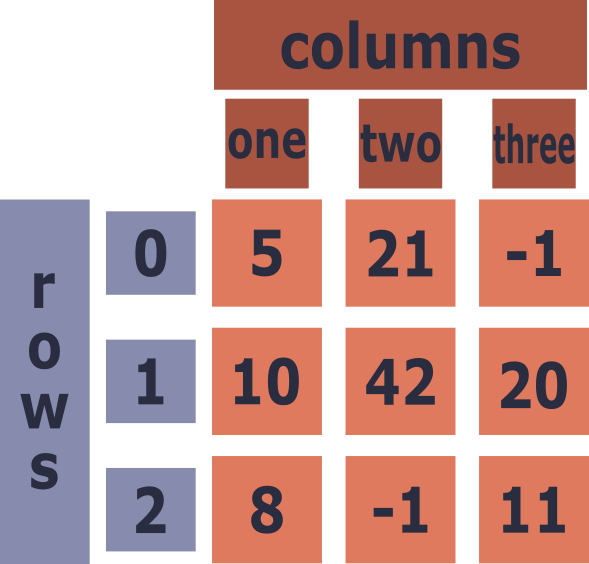

Learning Objectives
Introduction
While working with NumPy, you may have found that its matrices feel less intuitive than the more familiar way of handling tabular data: the spreadsheet. Pandas was created to bridge this gap. A specialised package built on top of NumPy, it is an open-source, community-supported project designed to make handling, transforming, and analysing tabular data straightforward. It is fast and memory-efficient, since it inherits NumPy's performance under the hood.
As with NumPy, Pandas is one of the core data science packages in Python, and you will find it widely used across both academic and commercial settings.
Over the years there have been some new tabular handling packages, namely Polars and Apache Arrow, which are said to be even faster and more memory efficient. They were created after Pandas and use similar syntax to what Pandas pioneered. These tools may be better for someone working with extremely big data. However, for your average data science needs Pandas is more than enough. Especially as there are many packages that integrate with Pandas, including a wealth of visualisation packages.
Intro to Pandas
As with NumPy you will need to install Pandas to your local environment to use it. Also like NumPy, Pandas is normally loaded into the workspace with the alias pd.
For this course we will be working with Pandas version 2.3.3. Currently, Pandas has been updated to 3.0+ in 2026, which has had some major changes to how strings and copy warnings are handled. However, the syntax and common methods are completely unchanged. We have chosen to stick with version 2+, as many software packages will not have upgraded to 3+, leading to confusion.
As with the array being the core structure at the heart of NumPy, for Pandas there is the DataFrame. Unlike the array, a DataFrame will have names associated with each column, as you would see in a spreadsheet. Additionally, there is an index column, which by default is an integer starting with 0 for the first row, counting up.
We'll have a look at this by creating a DataFrame a few ways:
From a matrix
Here you can see the data has been visually formatted into something more akin to a spreadsheet. Both the left-hand side and the top have new numbers, these are indexes for the rows and the columns respectively. However, having the columns as numbers is neither distinguishable from the row index, nor informative of what is in those columns. Therefore, you normally create the DataFrame with named columns, typically strings (words).

To do this we utilise a dictionary, where the key is the name of the column and the value is the data:
Keep the column names as informative as possible without being too long. If you need to use more than one word then use a - or _ to separate the words. A space will work some of the time but can cause issues. It is also crucial to make sure you don't leave any trailing spaces after words, i.e. "col-one ". This will create errors in accessing the column that are frustrating to catch!
We now have a properly formatted Pandas Dataframe with 3 columns and 3 rows. However, we are not normally creating a DataFrame from scratch, rather we are importing our own or others’ experimental data into our workspace.
The Penguin Dataset
For demonstration throughout DP1-2 we will be using the Palmer Archipelago Penguins dataset to help us explore how to work with data in Pandas. This dataset was made publicly available by Horst AM, Hill AP, Gorman KB (2020): Palmer Archipelago (Antarctica) penguin data.
This dataset is stored in the data folder that can also be found inside your lesson repository under the name penguins.csv. To bring it into Pandas we use the pd.read_csv() function from Pandas and store it as the variable df, a shortening of DataFrame:
CSV: A Comma-Separated Values file. A plain text format where each line represents a row of data and each value is separated by a comma. It is one of the most universal formats for storing and sharing tabular data.
There are several other functions for reading in other types of tabular dataset, these can be found here. However, a CSV is one of the more universal.
The argument for pd.read_csv() is a string of the path of the file we want. The path is the location of the file given the many folders it may be nested within. If we were to give the full path of the file in our computer, i.e. /Users/MY_COMP/Documents/scryptiq/DP1_Lesson/data/penguins.csv this would be the absolute path. Alternatively, as we have done here, we can give the relative path by providing a full stop (.). This tells the computer that the path starts in the same folder you are currently in, in this case it would be your working repository.
This content was written for a MacOS / Linux system, which utilises forward slashes / for its paths. In contrast Windows uses backwards slashes \, which in Python are treated as escape sequences, terminating the path early. You therefore need to provide a r character before the string, so to have the computer know to not treat it as a normal backwards slash:
Path: The address of a file or folder on your computer's filesystem that is represented as a sequence of directory names that tells the computer where to find something.
Absolute Path: The full address of a file from the root of the filesystem, e.g. /Users/MY_COMP/Documents/project/data/penguins.csv on macOS/Linux. It will work regardless of where your script is located.
Relative Path: An address given relative to the folder your script is currently running in. Shorter and more portable than an absolute path, as it doesn't depend on a specific machine's folder structure.
- ./:: Refers to the current directory (the folder your script is in). So
./data/penguins.csvmeans look in a folder called data inside the current folder. - ../:: Refers to the parent directory — one level up from the current folder. So
../data/penguins.csvmeans go up one folder, then look in data.
Viewing your data
To see the contents of the imported DataFrame, simply type the variable df or use print():
From the print we can see the dataset has 344 rows and 8 columns. Due to the size, both in width and length the DataFrame has been truncated.
To just get an overview of the data without printing the whole DataFrame, it is common to use the .head() method to print instead. By default .head() will only print the first 5 rows and is typically your first action after loading the data, just to check whether the data has been loaded in correctly!
Like a NumPy array, a DataFrame has a shape attribute, that can be used to programmatically obtain the number of rows and columns:
You can also get all the column names through the .columns attribute, which returns an indexable list:
Having a closer look at the column names shows us that two of them don't follow the good practice rules for names. Both "Culmen Length (mm)" and "Culmen Depth (mm)" have spaces and capitalisation.
This can be quickly rectified by using the .rename() method. To do so, you provide a dictionary where the:
- keys are the current column name
- values are what you want to replace them
To have the method alter the DataFrame, rather than returning a renamed one, we set the inplace argument to True.
Data Types
Unlike NumPy, a DataFrame can consist of mixed data types for different columns. However, the data within each column must be of the same type. For this reason you can think of each column as a vertical NumPy array.
Where a column dtype is object it indicates it is neither a float nor an integer. This is typically a string, although it can be lists/arrays, tuples, dictionaries, etc.
The number of any given type can be found by a combination of conditional operators and sum():
As of Pandas version 3+, strings now have their own dtype, distinct from object.
11.
Load the practice dataset obesity_dataset.csv into the variable pe_df. It is in the same folder (data) as the penguins dataset. Check that it has loaded correctly using head().
With this dataset, find and print:
- The number of rows and columns
- The name of the 5th column
- The number of object-type (text) columns
Accessing Columns
The data is accessed much like in NumPy, except now there is a string identifier to index with. For example if we wanted to access the body mass column, we would place the column name inside square brackets [] after the DataFrame variable:
This returns a Pandas series, which is a 1-D array akin to a NumPy array, just with some extra attributes that associate it with the DataFrame. If you were to index for more than one column, a DataFrame will be returned instead. To do so, you will need to place your column names inside a list:
What do you think will be returned by a singular column name inside a list? Run the cell below to find out:
The Pandas series can be indexed in all the same ways as a NumPy array:
Or, if you prefer, you can convert it to a NumPy array to play around with it that way. This has the added benefit of ensuring it can be used with all of NumPy’s additional tools. Although, often a Pandas series will automatically work with a NumPy function.
There are two methods to type cast it to a NumPy array:
12.
From the obesity dataset (pe_df):
- Isolate just the Weight column as a Pandas Series and print the first 10 values
- Separately, create a sub-DataFrame containing only the Gender, Weight, and NObeyesdad columns.
Slicing with .loc
The above methods of indexing and slicing, whilst they work, are not the officially recommended method, due to the fact that it chains together multiple actions. Instead, if you aim to select some columns and some rows, .loc is the best method to use.
Like with NumPy, .loc allows the user to index and slice inside a singular set of square brackets []. However, rather than using integers, it is the labels for both the columns and index, i.e. df.loc[index_label, column_labels]. As standard, the index is a continuous series of numbers, therefore this translates to something similar to NumPy, however, users will replace the index with string labels.
For our dataset, in order to obtain all the rows from the column called "body_mass_g", we would use:
To display only the first three masses, assuming the DataFrame index starts at 0, you would use:
Like with NumPy, the rows are indexed first and the columns second. However, a big difference is that .loc slicing is end-inclusive, which means the index 2 above is included in the return. Pandas uses end-inclusive slicing here for readability, though this differs from the standard Python convention.
As seen previously, multiple columns can be returned by placing them inside a list.
.iloc[]
An alternative to .loc is .iloc, which is purely numerical index based slicing. However, given .loc can utilise numerical indexing for the rows it seems less explicit to use the numerical indexes of the columns rather than their given labels. The one big difference is that .iloc is end-exclusive, as is normally seen with slicing but not with .iloc. We recommend you pick one type to use exclusively, to prevent confusion.
Below, we have recreated the some of the .loc slices with .iloc:
13.
Using .loc on pe_df, return:
- The Height values for the first 5 rows
- The SMOKE, Age, and MTRANS columns for rows at index 100, 200, and 300
Filtering
The entire DataFrame can be easily filtered to only return rows of data where a condition is met. For example if we were only interested in the Chinstrap penguins, we would select for them in the following way:
Lets break it down. Inside the square brackets a boolean array is created, just as we saw previously:
This array is mapped to the DataFrame index, where the values are True the rows are selected.
As with NumPy multiple conditionals can be combined with & and | operators:
14.
- Filter
pe_dfto show only participants classified as 'Obesity_Type_III' from the NObeyesdad column. - Next, write a second filter to show only male participants with a weight greater than 100 kg.
Making a copy
When you filter or slice a DataFrame, the result is not always a brand new, independent DataFrame. Often it is a view: a window onto the original data rather than a separate copy of it.
This becomes important the moment you try to modify a subset. Because Pandas cannot always tell whether you intend to change the subset alone or the original DataFrame behind it, it raises a SettingWithCopyWarning to flag the ambiguity.
View: A subset that still points at the original DataFrame's data. Changing it may also change the original.
Copy: A fully independent duplicate of the data. Changing it leaves the original untouched.
For example, say we filter for the Chinstrap penguins and then try to set their bill_length_mm to 0. Pandas warns us that it is unsure whether we mean to alter the subset or the original df:
As it assumes that the aim is to change a set of values in the original DataFrame, it suggests tp the user to use .loc to set the value, as this will explicitly return a view. Here, we can just pass the boolean array from the filter to the row part of the indexer, instead of giving it explicit indexes as we did previously.
This ends up looking like the below:
However, our aim here is to create a subset of the data which we want to alter further, leaving the original DataFrame untouched. To work on a subset safely, append the .copy() method when you create it. This returns an independent DataFrame, so any changes apply only to the subset and the original df is left untouched.
To summarise, use standard filtering with .copy() when you want to create a subset of the data to work with downstream, and use .loc when you want to alter the values at specific positions.
For Pandas 3.0+ all filtering and indexing operations will return a copy when assigned to a variable, rather than the patchwork of views and copies. Due to this the warning has been removed. More can be read about it here.
The same rule applies that you should use .loc for assigning values. Except now you do not need to append .copy() to the filtering/indexing when assigning a subset to a new variable.
Summary & Quiz
Pandas works as a combination of the power of NumPy with the familiarity of spreadsheets. If you work with tabular data, Pandas should become one of the go-to tools for quick data exploration and cleaning. In the next section we will focus on using Pandas tools to augment the data and to analyse the underlying statistics.
Summary & Quiz
Attempt the questions below once you have finished. If you get any wrong, head back to that section to remind yourself of the reasoning/syntax behind the correct answer:
What is the core data structure of Pandas?
What is returned when you access a single column with `df["body_mass_g"]`?
Which method renames columns in place when given a dictionary and `inplace=True`?
How does `.loc` slicing differ from standard Python/NumPy slicing?
How do you filter a DataFrame to rows where species equals "Chinstrap"?